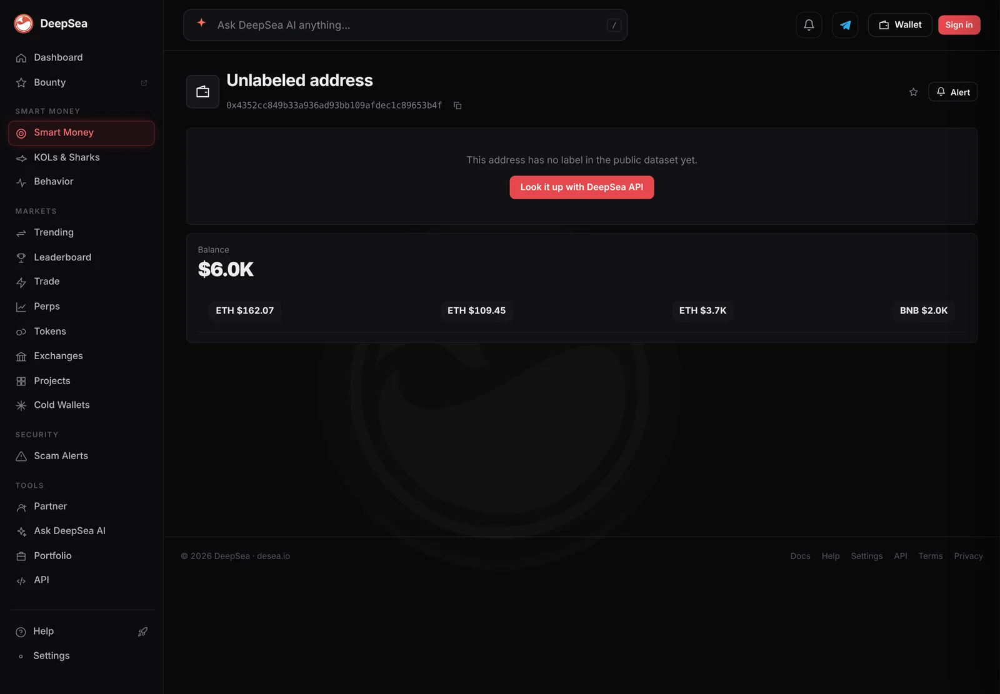

One shark pulled $10.2 million of USDC from Aave on Arbitrum in a single trade
An unlabeled wallet made the day's biggest shark sale on any chain, more than 10 times the next one. Arbiscan shows it now holds none of the Aave token, and the pool's supply fell 7% in a day.
Key points
- DeepSea's 24-hour shark feed shows $10.18 million of Aave's Arbitrum USDC deposit token sold and none bought, by one wallet in one trade.
- That is more than 10 times the next biggest shark sale on any chain: $968,495 of USDT0 on Optimism.
- Arbiscan shows the wallet at zero, and 182.65 million of the token left in total, down from 196.41 million a day earlier.
 What DeepSea's data shows
What DeepSea's data shows
DeepSea tags large, active wallets as sharks. Its 24-hour shark feed, read at 12:35 a.m. ET on November 19, puts aArbUSDCn at the top of the sell list: $10,181,718 sold, $0 bought. aArbUSDCn is the receipt that Aave, the lending app, gives for USDC deposits on Arbitrum. Selling it means taking the USDC back out.
The whole amount came from one wallet in one trade: 0x4352...3b4f. DeepSea counts it as a shark but gives it no name. Its page reads "Unlabeled address" and shows a balance of just $6.0K, mostly in ether. The trade is not in the feed's last hour, so it came earlier in the day.
No other shark sale came close. The next biggest on any chain was $968,495 of USDT0 on Optimism, spread over 67 trades by nine shark wallets.

Data: DeepSea (desea.io), checked November 19, 2026, 12:35 a.m. ET.
What Arbiscan shows
Data from DeepSea and Arbiscan. Arbiscan, the Arbitrum block explorer, lists a balance of 0 aArbUSDCn for 0x4352...3b4f at about 12:45 a.m. ET. So the wallet took out everything it had in this pool.
The same page shows 182,648,926 aArbUSDCn in existence, held by 27,988 addresses. When we checked on November 18 for our story on two earlier withdrawals, Arbiscan showed 196.41 million. That is a drop of about 13.76 million, or 7%, in roughly a day. The one wallet's $10.18 million equals about three quarters of that drop.
Neither DeepSea nor Arbiscan's token page shows where the USDC went after it left Aave.
Biggest shark sales, 24 hours to 12:35 a.m. ET, November 19
US$ million
Source: DeepSea 24-hour shark feed, gross sales, read November 19, 2026, 12:35 a.m. ET
Why Aave withdrawals matter
Aave lends out the coins people deposit and pays them interest. A withdrawal hands back the receipt token and returns the USDC. It is not a sale of USDC, and it does not tell us what the owner plans to do next. Shark is DeepSea's label for a big wallet; the owner of this one is unknown.
This is the third large exit from the same pool in three days. On November 17, two other wallets took out $18.52 million, including SM6e36, a top Hyperliquid trader.

LC Insight analysis
This section is our reading of the facts above, not a statement of fact.
- We think a 7% drop in a day is large for a pool this size, and it was driven by a handful of big wallets rather than many small users.
- Nothing in the data points to a problem at Aave. Big holders moving cash in one go is common, and the reasons are not visible on chain.
- The more useful clue will be where the $10.18 million lands next, for example an exchange or a trading account.
What's next
- Where the withdrawn USDC moves next.
- Whether aArbUSDCn supply keeps falling.
- Whether the wallet comes back to Aave.
Disclaimer. This article is based on public information and the sources listed below as of the update time shown. It is for information only and is not investment, legal or tax advice. Figures may change as companies and authorities publish new data.